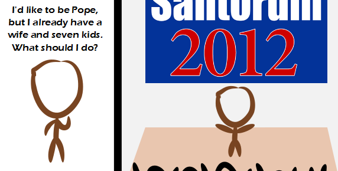

Comic JK 880
When I Feel Like It
⇤
<
?
>
⇥

⇤
<
?
>
⇥
Forum
.
RSS
.
Digg
.
Facebook
.
Reddit
.
Twitter
.
Stumbleupon
Enter your thoughts on number 880 here. Please, no spamming, trolling, or being the Pope. President is ok. Your mother supports Rick Santorum because she likes it when a man tells her what she's permitted to do with her body. Madlib => HZZP: Hyper Zimbabwe Zoom Protocol He isn't even Catholic... -_- >You don't have to be Catholic to want to be the Pope >>He is a practicing Roman Catholic >>>He just doesn't understand Catholicism >>>>Let's make a "Catholicism Wow" campaign! >>>>>I'm an atheist and I want to be Pope. >>>>>>Well I'm a christian and i don't think the Pope is one. I'm also ignorant. >>>>I'm not sure that's a limitation here. Who is this? I'm not from the US, so a wee bit unfamiliar with current states of the pre-elections... >Guy seeking the Republican nomination. Very socially-conservative. >>my my what I large rock you live under. >Christian extremist. Openly opposes separation of church and state, wants to ban gay sex and all birth control, and obviously denies global warming. If you Americans elect him as president I'll buy a bunker and prepare myself for World War III (I'm not joking). >>I'm American and if we elect him, I might buy a bunker too. >>>I said it when Sarah Palin was running for VP, and I'll say it now: "If he's elected, people will be hopping the border to Mexico" :P >>>>Go for it. The people who say they'll leave if X is elected never do. >>>>>I'll be packing my bags, on a plane, and exercising my Norwegian citizenship >>"Christian extremist" and "denies global warming" do not *obviously* go together... I for one would expect a "Christian extremist" to believe global warming to be the wrath of their God, incurred as a direct consequence of general acceptance of contraception or gay marriage or eBay or something... >>>Yeah but god loves the USA. He would obviously do something more targeted at gays like send us to war or make a big hurricane. >>>>>>Fine point. How about this: "Right-wing-America extremist". After all extremist don't choose their opinions based on logic, they form their bias based on whatever they hear and then accept and reject things according on what they like. > You're all wrong. Santorum is the frothy mixture composed of lube and feces that sometimes results from anal sex. To "rick" is to remove something with your tongue. I don't need to define the most disgusting sentence in the English language - "Rick Santorum". Note to deletionists: This is not a troll - it is 100% true and easily verified. I did not create the nasty, I'm only communicating it. When the state that elected him senator hates him, you know that's a bad sign. --Signed PA resident. >Or good, depending on which Philadelphia-encompassing "keystone" state it is. >>What? >>>Pennsylvania is Pittsburgh and Philadelphia with Alabama in between. If it wasn't for the two cities, the rednecks would vote the biggest bible-humping god fear'n asshole into office every time. Sounds just like Wasilla, Alaska; a stones throw from here. But here a lot of far right embrace Ron Paul because he's even more radically right of common sense. >What distinguishes Ron Paul is he is the only one that recognizes codified limitations on government power. >>Also, in 2008, his campaign advertised that he grew organic tomatoes. No word on whether or not that continues. >>>though, to be fair, if it *had* continued since 2008, those tomatoes would now be big enough to have their own post code... eh